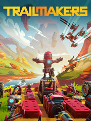

Trailmakers
Trailmakers
Details
|  | |
| Playtime | Not Played |
| Last Activity | Never |
| Added | 8/19/2023 14:50:25 |
| Modified | 8/19/2023 19:53:08 |
| Completion Status | Not Played |
| Library | Steam |
| Source | Steam |
| Platform | PC (Windows) |
| Release Date | 9/18/2019 |
| Community Score | 80 |
| Critic Score | |
| User Score | |
| Genre | Adventure Indie Racing Simulator |
| Developer | Flashbulb Games |
| Publisher | Flashbulb Games |
| Feature | Co-Operative Multiplayer Single Player |
| Links | Steam YouTube Official Twitch |
| Tag | |
Description
Build a car, plane or boat…Or mash ‘em all together as a transforming carplaneboat! Play your way and explore the Stranded in Space campaign, learn the basics of building (and piloting) various vehicles in Rally or go to one of the sandbox maps and build the hovercraft you’ve always dreamed of owning in real life!

Trailmakers offers a variety of weapons you can use to build the biggest, baddest vehicle and utilize it against your friends in epic skirmishes. From miniguns to rockets launchers, bomb bays, and smart guns. Your preferred choice of mayhem is waiting for you. Once you’ve put the finishing touches on your combat vehicle, you can use the built-in aiming reticle with adjustable aim-assist to engage in brutal, but fair battles. With the addition of Camera Blocks, you can get a view from over, under, and behind your vehicle for that 360 overview of incoming combatants.

Play alone or up to eight players with drop in / drop out multiplayer game modes on most maps in Trailmakers. Build with or against your friends, and see who’s going to blaze the trail towards whatever goal you set for yourselves!

Crashed on a mysterious planet your inventiveness and building skills are put to the test. Create new vehicles out of the scrap you can find. Collect new parts and use your abilities to build the specialized vehicles needed to reach the corners of the planet be it under water or inside the volcano. Your goal is to collect enough parts to rebuild your spaceship and get back home.

Our deceptively simple build mode lets you snap together blocks intuitively, so you can be up and running in moments… Or you can learn the intricacies of the system and build complex marvels. Customize the colors on your builds, or support development of the game with one of the Skin Packs to truly stand out!

Explore our two sandbox maps, filled to the brim with jumps, halfpipes, catapults, an aircraft carrier and even more crazy obstacles.Play the game however you want - do Zen and the Art of Building Whatever You Like, or challenge yourself and your friends to do any of a vast variety of stunts and races to prove that *your* creation is the best, fastest or strongest!

Learn the basics of building and piloting the various vehicles that can be made in Trailmakers in Rally mode, and then make a name for yourself on the global leaderboards against our community of Trailmakers. If you’re looking for more challenges, take a trip to scenic Race Island to truly prove your worth against the top racers in Trailmakers.

Enjoy Steam Workshop support to share your creations or mods, or see what other players have come up with, then join our lovely Discord community to keep up with the latest news, and find people to play with, exchange build ideas & challenge your building skills.
Trailmakers offers a variety of weapons you can use to build the biggest, baddest vehicle and utilize it against your friends in epic skirmishes. From miniguns to rockets launchers, bomb bays, and smart guns. Your preferred choice of mayhem is waiting for you. Once you’ve put the finishing touches on your combat vehicle, you can use the built-in aiming reticle with adjustable aim-assist to engage in brutal, but fair battles. With the addition of Camera Blocks, you can get a view from over, under, and behind your vehicle for that 360 overview of incoming combatants.
Play alone or up to eight players with drop in / drop out multiplayer game modes on most maps in Trailmakers. Build with or against your friends, and see who’s going to blaze the trail towards whatever goal you set for yourselves!
Crashed on a mysterious planet your inventiveness and building skills are put to the test. Create new vehicles out of the scrap you can find. Collect new parts and use your abilities to build the specialized vehicles needed to reach the corners of the planet be it under water or inside the volcano. Your goal is to collect enough parts to rebuild your spaceship and get back home.
Our deceptively simple build mode lets you snap together blocks intuitively, so you can be up and running in moments… Or you can learn the intricacies of the system and build complex marvels. Customize the colors on your builds, or support development of the game with one of the Skin Packs to truly stand out!
Explore our two sandbox maps, filled to the brim with jumps, halfpipes, catapults, an aircraft carrier and even more crazy obstacles.Play the game however you want - do Zen and the Art of Building Whatever You Like, or challenge yourself and your friends to do any of a vast variety of stunts and races to prove that *your* creation is the best, fastest or strongest!
Learn the basics of building and piloting the various vehicles that can be made in Trailmakers in Rally mode, and then make a name for yourself on the global leaderboards against our community of Trailmakers. If you’re looking for more challenges, take a trip to scenic Race Island to truly prove your worth against the top racers in Trailmakers.
Enjoy Steam Workshop support to share your creations or mods, or see what other players have come up with, then join our lovely Discord community to keep up with the latest news, and find people to play with, exchange build ideas & challenge your building skills.